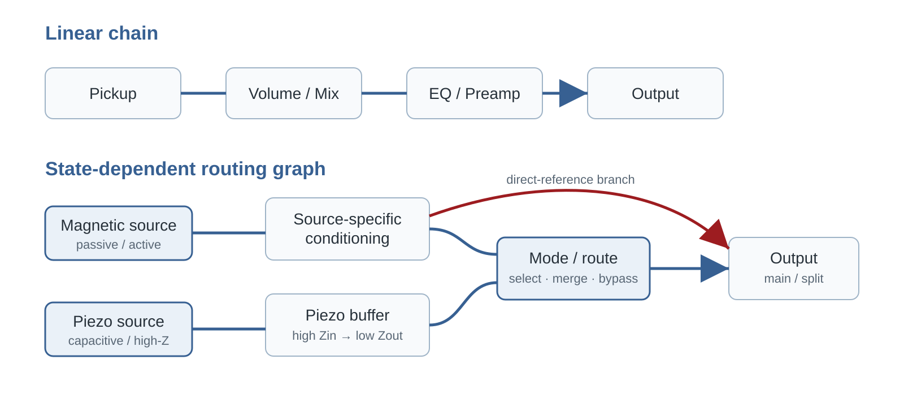
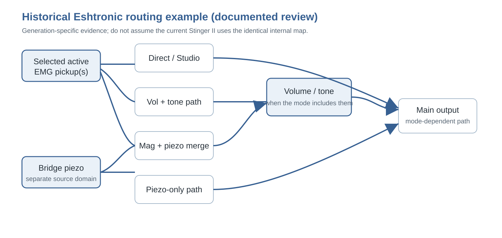

RAVENFORGE / SIGNAL & TRANSDUCTION RESEARCH LOG — B06
RAVENFORGE
Signal & Transduction / Electronics Architecture Research Log
B06 — Rethinking the Internal Signal Path
Unified verification edition — stage order · impedance boundaries · source domains · routing states · programmable switching
Document purpose |
| Code | B06 |
|---|---|
| Focus | internal routing · source domains · reference states · Eshtronic evidence audit · piezo/magnetic integration · programmable switching · serviceability |
| Evidence | manufacturer datasheets/manuals · current product pages · historical review · circuit application notes · owner-community secondary evidence |
| Verification rule | separate current specification, historical implementation and RavenForge engineering inference; do not infer unpublished topology |
| RavenForge link | B03 passive architecture → A06 active architecture → B06 verified routing architecture → A07 headroom/power |
| Status | Deep-research verification revision · literature/technical synthesis complete · prototype measurement pending |
| Date | 2026-09-21 |
1. Research question and purpose of the verification revision
B06 asks whether internal instrument electronics must always be described as one fixed Pickup → Volume → Preamp/EQ → Output chain. The deep-research review found no basis for that universal assumption. Different sources can require different input boundaries, mode switches can select, bypass and merge branches, and some states create explicit reference paths.
This revision preserves the B06 framework while separating manufacturer fact, historical implementation, owner-community testimony and RavenForge engineering synthesis. It also removes or qualifies claims that exceeded their evidence, such as treating 10 MΩ as a universal piezo rule, 25 kΩ as a universal active-pickup rule, or assuming that a historical Eshtronic state map is identical to the current circuit.
2. Method and source hierarchy
| Level | Source type | Use in B06 |
|---|---|---|
| A | manufacturer datasheet / installation manual / current product page | primary source for numerical and current product claims |
| B | professional application note / circuit theory | electrical principles such as source impedance, conditioning and switching |
| C | period review / archive | generation-specific historical implementation |
| D | Bassic / TalkBass owner testimony | secondary corroboration only |
| E | RavenForge synthesis | routing taxonomy and specification framework; never presented as manufacturer fact |
Unrelated Stenback material surfaced during exploratory search but was excluded from the B06 electronics evidence set as a relevance-control measure.
3. Executive verification summary
| Claim | Status | Finding |
|---|---|---|
| Listed EMG 35/40-series active bass pickups have 10 kΩ output impedance | Confirmed | EMG official 35/40 datasheets [5–6] |
| Current ESH Stinger-family products use Eshtronic, Mode Selector and piezo hardware | Confirmed / option-dependent | ESH current product pages; exact pickup option must be tied to the specific model/string count [2–3] |
| A historical Eshtronic implementation used Direct/Studio, magnetic+controls, magnetic+piezo and piezo-only states | Partially confirmed | Period review plus repeated owner reports; not proof of present-circuit identity [4,11–12] |
| The McGrath 12-Way Rotary Selector uses relay switching for three pickups, provides twelve factory routing states with favorite/previous recall and an All-Parallel failsafe, and can remap fourteen tonal possibilities through its companion app | Confirmed | McGrath manufacturer material and Fret Nation product specification [14–16] |
| An EMG-equipped Studio/Direct state is passive | Contradicted | Active pickup electronics remain; direct-source reference is the more accurate term [5–6] |
| High input impedance matters for passive piezo sources | Confirmed | TI and Fishman support the principle [8–9] |
| Every passive piezo requires exactly 10 MΩ | Contradicted as a universal claim | 10 MΩ is a product-specific Fishman recommendation, not a universal constant |
| B125 provides per-input buffering and supports active/passive source mixing | Confirmed | EMG official system documentation [7] |
| Separate/direct piezo output was a universal Stinger II feature | Unverified | Owner evidence exists for some instruments; not generalizable [11–12] |
3A. Stage-order & Impedance-Boundary Study — the second axis of B06
Source-domain and routing-state verification alone cannot describe the full onboard architecture. The same pickup, volume, tone and boost can behave differently depending on where the high-impedance pickup domain ends, whether volume is before, after or between active stages, and whether filtering happens before or after mixing. The unified B06 therefore records stage order / impedance boundary and state-dependent routing as two complementary axes.
Unified B06 question |
3A.1 Why stage order changes the circuit
Model a passive magnetic pickup as a source with frequency-dependent impedance ZPU(f). The voltage delivered to the next stage is Vin(f)=Vs(f)×Zin(f)/[ZPU(f)+Zin(f)]. Moving an active stage or volume/tone network can therefore change the load seen by the pickup and alter loaded resonance and control interaction.
If two stages are sufficiently isolated linear time-invariant blocks and mutual loading can be neglected, some reorderings can approach H1(s)H2(s)=H2(s)H1(s). Real instruments add finite Zin/Zout, potentiometer loading, noise contribution, clipping/headroom, nonlinear stages, feedback, source summing and state-dependent switching, so physical order is not generally interchangeable.
3A.2 ZUTA CORE — active boundary before master volume
The official ZUTA CORE installation manual conceptually recommends Pickup(s) → Selector / passive tone → CORE → Master Volume → Jack [17]. CORE is therefore not correctly described as a post-volume booster. It leaves passive selector/tone interaction upstream, establishes an active boundary, and places master volume after that boundary.
Published 1 MΩ input / 1 kΩ output figures for ZUTA LUXE are model-specific [18] and are not automatically transferred to CORE.
3A.3 Fender Blackie / Elite MDX / Eric Clapton Signature — separate history from topology
The original Blackie was not an active-mid-boost guitar and must not be treated as electrically identical to the later Eric Clapton Signature system [20]. Fender’s Clapton service diagram officially confirms a 50 kΩ Audio Volume, 250 kΩ Mid Boost control, TBX-related dual control, circuit-board assembly and 9 V power [19].
The interpretation first active stage → 50 kΩ volume → second mid-emphasis stage comes from secondary circuit reconstruction such as Aion FX, not from the Fender service layout itself [22]. Historical accounts connecting James Demeter and John Carruthers with the 1983 Elite MDX / Clapton lineage are likewise treated as secondary technical history [21].
3A.4 EMG SPC/RPC — a counterexample to “order always matters”
EMG SPC/RPC installation information presents series active-control wiring and, in its three-pickup examples, both Switch → Volume → Passive Tone → SPC → Jack and Switch → Passive Tone → SPC → Volume → Jack [23]. EMG states that the only difference is control order and that the result is the same.
This is not a universal rule for every low-Z circuit. It is a manufacturer-specific equivalence under the documented control network, linearity and Zin/Zout conditions. The stronger B06 statement is: order matters when moving a stage changes loading, nonlinear operating level, summing law, filter interaction or state routing.
3A.5 Demeter MB-2 — function is primary evidence; universal onboard order remains unknown
Demeter describes the MB-2 as an onboard guitar midboost/buffer with variable mid boost and a low-impedance buffer [27]. The manufacturer material currently available does not establish a universal mandatory placement before or after master volume. The I/O order of the MB-2B pedal documentation is not transferred into a required onboard MB-2 topology [28]. Historical relation to the Fender MDX/Clapton story does not make the circuits identical.
3A.6 Wal and John East UNI-PRE — processing-before-mix and dual-path architecture
Wal officially describes its pickup mixer as combining pre-EQ'd pickups, each with its own electronic low-pass filter [24]. This is per-source filtering → mixing, not the same topology as mixing first and applying one master LPF.
John East explicitly describes UNI-PRE as having independent active and passive signal paths, with an input buffer/amplifier and 0–12 dB gain trim for each pickup in the active path [25]. Active/passive switching therefore cannot be reduced to a simple EQ bypass.
3A.7 Peavey T-60 — one knob combining parameter and topology control
The Peavey T-60 circuit and related patent provide a passive example in which the tone control changes the relationship of a center-tapped pickup coil, combining single-coil/humbucking behavior with conventional tone action [26,29]. The phase switch becomes meaningful when both pickups are in use. A label such as “Tone” therefore does not uniquely describe the electrical operation.
3A.8 Unified architecture taxonomy
| Axis | Type | Meaning | Verified example |
|---|---|---|---|
| Stage-order / boundary | A — Passive-domain processing → active boundary → post-boundary volume | retain selected passive interaction, then enter low-Z domain | ZUTA CORE |
| B — Early active boundary → low-Z controls | source isolated early | active/buffered sources | |
| C — Inter-stage volume | level control between active stages | Fender MDX/Clapton reconstruction | |
| D — Passive volume/tone → active processing | pickup directly sees passive network first | selected onboard/EMG examples | |
| E — Per-source processing → mixing | source-specific filter/buffer before merge | Wal / UNI-PRE active path | |
| F — Dual-path | active and passive/reference paths remain separate | UNI-PRE | |
| State-routing | Sequential | all sources share one chain | baseline |
| Direct-reference | bypass selected downstream controls/stages | historical Eshtronic | |
| Source-specific parallel | independent source conditioning/filtering | piezo/magnetic · EDDA-like | |
| Selectable merge | branches merge only in selected states | mode-based routing | |
| Split-output | sources leave through independent outputs | historical variants / design primitive | |
| Programmable state selector | relay/logic layer selects and recalls states | McGrath 12-Way |
The two taxonomies are complementary. The first describes stage order and impedance boundaries; the second describes branch/state behavior. Complex instruments often require both.
4. State-dependent routing graph — the core B06 model
The review supports the usefulness of the B06 abstraction, with one important boundary: state-dependent routing graph is RavenForge engineering language, not ESH or EMG manufacturer terminology. Sources, conditioning nodes, controls, merge points, bypass branches and outputs are documented as nodes/edges, while switch state determines the active path.

Figure 1. B06 synthesis. Once source-specific conditioning, direct-reference branches and selectable merge states exist, a graph documents the circuit more accurately than a single serial line.
5. Source domains — why passive magnetic, active magnetic and piezo must be distinguished
A passive magnetic pickup is a frequency-dependent source whose response is directly coupled to pot, cable and downstream input loading. Listed EMG 35/40-series active pickups use powered internal electronics and have 10 kΩ specified output impedance [5–6], so their downstream boundary is different even though they are also magnetic pickups.
Piezo sources form another domain. TI treats piezo sensors as high-source-impedance devices and discusses high-input-impedance JFET/CMOS front ends [9]. Fishman guidance for a particular passive piezo product reports best response into 10 MΩ and usable operation at 1 MΩ with some bass roll-off [8]. RavenForge therefore documents source Z, level, required Zin and buffering need rather than relying on pickup labels alone.
6. ESH / Eshtronic — separate current specification from historical routing
Current ESH product pages support the presence of Volume, Tone, Pickup Selector, Mode Selector, Esh-tronic active electronics and Esh Custom piezo hardware in the Stinger family [2–3]. Exact EMG pickup assignments must be recorded against the particular model and string-count option rather than generalized across every Stinger.
Detailed four-state routing is historical evidence. Period reviews and owner reports repeatedly describe Studio/Direct, magnetic with controls, magnetic + piezo and piezo-only behavior [4,11–12]. This supports a generation-specific implementation, but does not establish that the current Stinger II uses the identical internal switching topology.

Figure 2. Historical implementation model reconstructed from period/owner descriptions; not an official schematic of the current Eshtronic.
7. Studio/Direct — direct-source reference, not passive
In an EMG-equipped configuration, calling Studio/Direct “passive” is electrically inaccurate. Bypassing Volume/Tone or downstream electronics does not remove the active electronics inside the EMG pickup [5–6]. B06 therefore uses Direct-source reference.
Terminology boundary |
This statement must not be generalized to every historical Eshtronic generation without identifying the actual pickup/source architecture used in that instrument.
8. Piezo boundary — how to interpret 1 MΩ and 10 MΩ
Fishman’s 10 MΩ guidance should not be rewritten as “all piezos require at least 10 MΩ.” It is a manufacturer recommendation for a specific passive piezo implementation: 10 MΩ preserves the full response best, while 1 MΩ remains usable with some bass roll-off [8]. The generalizable principle is that piezo capacitance and input resistance form a low-frequency boundary, so sufficiently high Zin matters [9].
The simplified relation fc ≈ 1/(2π·Rin·Cp) is useful for direction and sensitivity analysis. Any 5 nF/10 nF examples in B06 are RavenForge illustrative calculations, not measurements of an Esh bridge. Final values require measuring the actual sensor/network.
9. Mixing and the B125 — blend is an isolation architecture
EMG’s B125 documentation explicitly uses input buffers for the pickup inputs and supports passive/passive, active/active and active/passive combinations [7]. This is strong primary evidence that isolation before mixing is a real commercial architecture.
B06 therefore documents magnetic + piezo systems through source-specific conditioning, gain, polarity/phase relationship and the summing node rather than a nominal “50:50 blend” position. B125 itself is not assumed to be the universal solution: a piezo branch still has to meet its own input-impedance requirements.
10. Control placement — do not universalize the 25 kΩ rule
EMG’s BTC-HZ/B125 system documentation specifies a 25 kΩ Volume after its low-output-impedance active controls and warns against using the existing 250/500 kΩ controls in that particular system [7]. That is an official wiring rule for the named low-Z architecture.
It does not justify the universal statement “all active pickups need 25 kΩ.” Pot value must follow source impedance, circuit topology, noise objectives and manufacturer guidance. B06 therefore records where the control sits relative to buffering and mixing, not merely its label or nominal resistance.
11. Switching transients — a state transition is also circuit behavior
Analog Devices documents how charge injection, DC offsets, break-before-make and discharge paths can affect audio click/pop behavior [10]. This supports treating switching transients as a B06 validation category.
It does not identify the current Eshtronic switch technology or prove that ESH uses a particular anti-pop topology. Those details remain unpublished. RavenForge prototypes should measure transition transients separately from steady-state frequency response.
12. Split output — boundary between fact and owner testimony
Owner material mentions normal plus direct-piezo outputs on some Esh/Stinger instruments [11–12], but the evidence is not sufficient to make this a universal or current Stinger II specification.
Split-output therefore remains a routing primitive in B06 rather than a general ESH fact. If RavenForge adopts it, the justification must come from its own FOH/recording workflow, connector, grounding and service requirements.
13. RavenForge routing taxonomy — useful synthesis and its limits
| Type | Definition | Use | Limit |
|---|---|---|---|
| Sequential | all sources share one chain | baseline topology | can hide source-specific boundaries |
| Direct-reference | branch bypasses selected downstream controls/stages | reference A/B; historical ESH case | easy to mislabel passive |
| Source-specific parallel | independent conditioning/filter branches | piezo/magnetic; EDDA-like architecture | more parts, matching and service burden |
| Selectable merge | branches merge only in selected states | mode-based internal mixing | phase/level/transient management |
| Split-output | sources leave through independent outputs | external processing workflow | operational complexity |
| Programmable state selector | a physical control selects or recalls routing states implemented by a relay/logic layer | three-pickup multi-topology, compact UI, preset recall | power, firmware, failsafe and service dependencies must be specified |
This is a RavenForge documentation taxonomy, not a standardized electronics classification. Its purpose is traceability, not ranking.
13A. McGrath — when a programmable selector becomes a routing state machine
McGrath’s 12-Way Rotary Selector, introduced in June 2026, is not simply a twelve-position mechanical rotary that hard-wires each pickup combination. A powered control board uses relay switching to select routing states for three pickups [14]. The factory map includes each pickup alone, every pairwise parallel and series combination, Bridge+Middle in series merged in parallel with Neck, All Parallel and All Series.
The architectural point is not the number twelve but the separation of physical control from electrical topology. Push/long-press actions store and recall a favorite and return to the previous state; the companion app released in August 2026 can reduce the active position count and assign any of fourteen tonal possibilities to switch positions [14–15]. A knob position therefore no longer has to correspond permanently to one soldered contact map.
Fret Nation specifies screw-down pickup terminals, use of an existing 9 V or 18 V supply, triple-tap reset and an All-Parallel fallback on power loss [16]. For B06, this makes state map, recall behavior, reset behavior, power-loss state and service access part of the electronics specification. RavenForge need not copy McGrath’s implementation, but a three-pickup EMBLA option should evaluate this architecture class alongside conventional mechanical selectors.
14. Correction required — statements revised after deep verification
| Risky/previous wording | Required correction |
|---|---|
| “Current Eshtronic uses the same historical four-state routing.” | Remove. Separate historical implementation from current specification. |
| “Studio mode = passive.” | For EMG-equipped configurations, use Direct-source reference. |
| “Piezo requires 10 MΩ or more.” | State that high Zin matters; 10 MΩ is a product-specific Fishman example. |
| “Active pickups require 25 kΩ controls.” | Limit 25 kΩ guidance to the relevant EMG low-Z system or other explicit manufacturer specification. |
| Fixed predictions such as “1 MΩ gives a -3 dB point in the hundreds of Hz.” | Remove until Cp/network are measured. |
| “Separate piezo output is a normal Stinger II feature.” | Remove; keep only as owner-reported historical/variant evidence. |
| Unrelated Stenback search material | Exclude from the B06 evidence set. |
15. Applying the verified framework to ASKR, EMBLA and EDDA
ASKR
With an active EMG source and Tone Capsule, EQ bypass should not be labeled passive. A useful design proposal is Direct-source reference versus EQ path. Level matching, switching transient and power-failure behavior remain prototype measurements, not established facts.
EMBLA
With passive pickups feeding an onboard preamp, the design must decide whether pickup interaction is intentionally preserved before the preamp or isolated before blending. A possible three-pickup option makes selector logic, branch count, gain/polarity consistency and service access explicit requirements. A McGrath-type programmable relay selector is therefore a relevant comparison point, but adoption would require separate evaluation of the necessary state subset, cavity/PCB space, 9/18 V power budget, power-loss fallback and app dependency [14–16].
EDDA
The 2 Volume / 2 Filter concept can be specified as source-specific processing before merge. This is a RavenForge design proposal, not a claim that the instrument reproduces an Alembic/Wal circuit. Filter law, interaction and summing loss require later schematic and bench validation.
16. Prototype measurement protocol
| Item | Measurement | Purpose |
|---|---|---|
| Source/input boundary | Zin sweep, source Z(f), piezo capacitance/equivalent response | verify branch conditioning |
| State response | gain/frequency response by mode | quantify direct/controlled/merged differences |
| Level matching | RMS and peak for magnetic/piezo/merged states | identify mode jumps and summing balance |
| Switch transient | oscilloscope/audio capture of peak and duration | validate state transition quality |
| Noise | output noise by mode with bandwidth stated | quantify routing/buffer cost |
| Power failure | battery sag/removal behavior | document surviving/muted branches |
| State-map integrity | verify each physical position, favorite/previous recall, reset, power-loss state and app remap against actual routing | confirm that displayed/selected state matches the electrical graph |
| Serviceability | test-node access and fault isolation | verify practical maintenance |
No unmeasured effect size—such as a fixed Studio-mode level increase or exact 1 MΩ roll-off frequency—is treated as a result.
17. Current conclusion — document boundaries and states before the parts list
Verified B06 conclusion |
The central lesson from ESH is not to copy a four-way rotary switch. It is to separate source boundaries, define reference states, choose merge/split behavior deliberately, and make the current state legible to both player and technician. McGrath extends that argument by showing that the selector itself can become a programmable interface over a relay/logic routing graph rather than a fixed contact map [14–16]. B06 therefore treats the state-dependent signal graph as a specification framework that applies to current commercial architectures as well as historical examples. A07 can now treat supply voltage and headroom as separate variables without conflating them with routing architecture.
References
[1] RavenForge. “A06 — Onboard Preamp Architecture.” Signal & Transduction Research Log, 2026-09-18.
[2] Esh Basses. “Stinger II.” Current product page. Controls/electronics include Volume, Tone, Pickup Selector, Mode Selector, Esh-tronic active electronics and Esh Custom piezo bridge. https://www.esh-bass.com/products/32474-stinger-ii
[3] Esh Basses. Current Stinger-family product/options pages. EMG 35/40-series pickup assignments vary by model/string-count option. https://www.esh-bass.com/
[4] Musiccraft24. “The Dark Side of Esh” / historical Stinger review. Documents a four-state Eshtronic implementation and Direct/Studio concept; treated as historical, generation-specific evidence. https://www.musiccraft24.de/index.php?eID=dumpFile&f=8219&t=f&token=d7ee41d92e4bb2fabca7bf3e35be4ba8725803c4
[5] EMG Pickups. “35 Bass Pickups” specification sheet. Output impedance 10 kΩ for the listed 35-series active models. https://www.emgpickups.com/pub/media/Mageants/3/5/35_bass_0230-0127rb.pdf
[6] EMG Pickups. “40 Bass Pickups” specification sheet. Output impedance 10 kΩ for the listed 40-series active models. https://www.emgpickups.com/pub/media/Mageants/4/0/40_bass_0230-0128rb.pdf
[7] EMG Pickups. B125 Active Balance / BTC-HZ system documentation. Per-input buffering, active/passive source mixing and low-Z downstream control guidance. https://www.emgpickups.com/pub/media/Mageants/h/z/hz_btchz_system_0230-0204re.pdf
[8] Fishman. V-200 / passive piezo installation guidance: best response into 10 MΩ; usable at 1 MΩ with some bass roll-off. Legacy manufacturer guidance; archived/mirrored copies may be required for access.
[9] Texas Instruments. “Signal Conditioning Piezoelectric Sensors,” SLOA033A. High source impedance and high-input-impedance JFET/CMOS front-end guidance. https://www.ti.com/lit/an/sloa033a/sloa033a.pdf
[10] Analog Devices. “Selecting the Right CMOS Analog Switch.” Audio click/pop, charge injection, break-before-make and discharge considerations. https://www.analog.com/en/resources/design-notes/selecting-the-right-cmos-analog-switch.html
[11] Bassic.de. “Eshtronic gegen passive Elektronik tauschen?” and related Esh discussions. Owner/community evidence for historical Studio-mode philosophy; secondary evidence only. https://www.bassic.de/threads/eshtronic-gegen-passive-elektronik-tauschen.14810494/
[12] TalkBass. “ESH bass club” and related owner discussions. Repeated owner descriptions of piezo-only / piezo+magnetic / magnetic+controls / Studio routing; secondary evidence only. https://www.talkbass.com/threads/esh-bass-club.697883/page-3
[13] RavenForge. “B03 — Passive Tonal Architecture.” Signal & Transduction Research Log, 2026-09-17.
[14] McGrath Guitars. “McGrath 12 Way Rotary Pickup Selector.” 2026-06-28. Relay-switched three-pickup selector; twelve factory routing states, favorite/previous recall and All-Parallel power-failure fallback. https://mcgrathguitars.com/blogs/news/12-way-rotary-selector
[15] McGrath Guitars. “We made an app!” 2026-08-01. Companion app supports fewer than twelve active positions and assignment of fourteen tonal possibilities to switch positions. https://mcgrathguitars.com/blogs/news/we-made-an-app
[16] Fret Nation. “McGrath Guitars 12-Way Rotary Selector Switch.” Product page. Screw-down pickup terminals, 9 V/18 V supply, recall/reset behavior and All-Parallel failsafe. https://fretnation.com/products/mcgrath-guitars-12-way-rotary-selector-switch
[17] ZUTA Group. “ZUTA CORE MANUAL.” Official installation manual. https://cdn.shopify.com/s/files/1/0318/3987/9307/files/ZUTA_CORE_MANUAL.pdf?v=1760376558
[18] ZUTA Group. “ZUTA LUXE.” Official product page. https://zutagroup.com/products/zuta-luxe
[19] Fender Musical Instruments Corp. “ERIC CLAPTON STRATOCASTER UPGRADE 0117602” Service Diagram. https://www.fmicassets.com/Damroot/Original/10002/011-7602A_SISD.pdf
[20] Fender. “Iconic Mods: Eric Clapton’s ‘Blackie’ Stratocaster.” https://www.fender.com/articles/behind-the-scenes/iconic-mods-eric-claptons-blackie
[21] Wacker, D. “The Fender Eric Clapton Active Mid-Boost.” Premier Guitar, 2010. https://www.premierguitar.com/diy/mod-garage/clapton-mid-boost
[22] Aion FX. “Elite Boost/Preamp — Fender MDX/Clapton Mid-Boost.” Circuit reconstruction/build documentation. https://aionfx.com/project/elite-boost-preamp/
[23] EMG Pickups. “SPC / RPC Installation Information 0230-0160rB.” https://www.emgpickups.com/pub/media/Mageants/s/p/spc_rpc_0230-0106rb.pdf
[24] Wal Basses. “Components — Preamp.” Official manufacturer description. https://walbasses.co.uk/components/
[25] East UK / John East. “UNI-PRE 5 Knob User Manual.” https://www.east-uk.com/2025/11/28/uni-pre-5-knob-user-manual/
[26] Rhodes, O. J.; Peavey Electronics Corp. US4164163A, “Electric guitar circuitry.” https://patents.google.com/patent/US4164163A/en
[27] Demeter Amplification. “MB-2 Midboost/Fat Control.” https://demeteramps.com/product/mb-2-midboost-fat-control/
[28] Demeter Amplification. “MB-2B Midboost/Fat Control User’s Guide.” https://demeteramps.com/manuals/mb2busersguide.pdf
[29] Peavey Electronics. “T-60/T-40 Owner’s Manual.” Original manual / archival reproduction; patent linkage US4164163A.